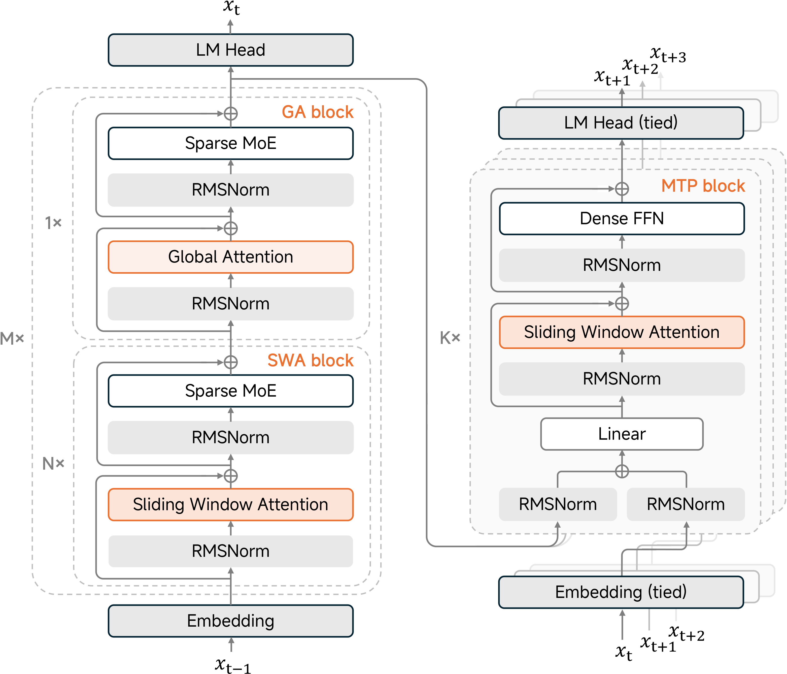

00全景与读法
MiMo-V2.5-Pro 是硬件厂商进入模型领域的重要动作：1.02T 总参 / 42B 激活的 MoE，MIT 许可，支撑 1M 上下文。它的长上下文节省方式与 2026 年其他厂商不同——不靠 MSA / DSA 这类块稀疏选择，而是交替堆叠 128-token 滑动窗口注意力（SWA）与全局注意力，比例 6:1，将 KV cache 降低约 7×。真正的核心优势是配套的 MiMo Code 智能体编码 harness：厂商基准里 MiMo Code + V2.5-Pro 在 SWE-bench Verified 82 / Pro 62 / Terminal-Bench 2 73 上分别超过 Claude Code + Sonnet 4.6，且在 200+ 步超长任务上更稳。对 RL-on-NPU：SWA 解码开销极低、7× KV cut 直接缓解 rollout 显存，MIT 许可适合做 RL 基座；但目前没有 Ascend 移植，且评测分数与 harness 强绑定。
每一节固定三段：朴素基线（左栏，灰：不看这篇材料时的直觉实现）/ 它的做法（右栏，橙：MiMo-V2.5-Pro 实际采取的方案）/ 差在哪（下方色块：差异、原文是否给了理由、对 RL-on-NPU 的含义）。数字按来源分三类标注：第三方 独立测量或报道、自报 厂商或作者口径、推断 本站分析。原文声明所有数字均为厂商 / 媒体口径、provisional，本文全部保留该限定。
一条贯穿全文的线索：6:1 与 7× 是同一机制的两个方面。约 6/7 的层从"随长度线性增长的全历史 KV"降级为"常数 128 窗 KV"，配比决定节省比例；而这一节省最直接的受益者是 decode-heavy、memory-bound 的 RL rollout。
01身份与定位
厂商为小米（Xiaomi）MiMo 团队。2026-04-28 正式开源（4-23 起公测），MIT 许可——可商用推理与二次训练，无需额外授权。家族两款：MiMo-V2.5-Pro 为旗舰，1.02T 总 / 42B 激活 MoE，面向编码 agent、复杂软件工程、超长工具链；MiMo-V2.5（标准）为 310B 总 / 15B 激活，约 48T token 预训练。定位是 agentic coding + 长程推理 + 多模态，主打"硬件厂商把端侧 / Agent 能力做进开源大模型"。
朴素基线
硬件厂商发布大模型，通常以开放权重但附带自定义许可的形式出现，规模上与旗舰实验室保持距离，定位以端侧或行业适配为主。
它的做法
自报 直接给出 1.02T / 42B 激活的旗舰级 MoE，附 310B / 15B 的标准版；采用 MIT 许可而非自定义许可；定位落在 agentic coding 与超长工具链，而非端侧推理。
差在哪两点差异决定了它对本站的相关性：MIT 许可使其可以作为 RL 基座做二次训练，不受收入 / MAU 门槛型许可约束；1.02T / 42B 激活的形态与 2026 年"总参做大、激活做小"的开源共识一致。原文未说明两款模型的预训练数据规模是否相同（仅给出标准版约 48T token）。
02核心：滑窗 × 全局 6:1 的结构
MiMo 采取的并非"块稀疏选择"路线（MSA 选块、DSA token 级 top-k、GLM-5.2 IndexShare 复用索引器），而是经典但有效的局部 / 全局交替：SWA（Sliding-Window Attention）层只读取 128 token 的局部窗口，开销极低、解码友好；全局注意力每隔几层插入一层，补充长程视野；比例 6:1——每 6 层 SWA 配 1 层全局，绝大多数层是低成本的局部注意力，少数全局层承接长程依赖。效果是长上下文下 KV cache 约 7× 降、质量不下降、支撑 1M 上下文。

这张图怎么读
先看左侧从下往上的堆叠顺序：Embedding → N 个 SWA block → 1 个 GA block → 回到下一组，直到 LM Head。两类 block 内部结构完全相同（RMSNorm → 注意力 → 残差 → RMSNorm → Sparse MoE → 残差），唯一差异是注意力子层是滑窗还是全局——这正是"SWA 本质是带 mask 的稠密注意力"的图示依据：不需要新的算子形态，只需换 mask 与 KV 保留策略。
再看 GA block 的位置：它在每个循环单元的末端，其输出直接成为下一组 SWA block 的输入。这与第 03 节的"汇聚—广播"读法对应：全局层一次汇聚全序列信息，随后若干层滑窗在其基础上做局部加工。右侧 MTP block 内的注意力也标注为 Sliding Window Attention，与 D15 讨论的 MTP / 投机解码链路相关，但本文原文未展开，此处不作延伸。

这张图怎么读
这张图与图 1 互为补充：图 1 给出 block 内部结构，这张图把 N 具体化为 6，并把"循环重复"画成显式的下一组单元。最值得看的位置是第 7 层与下一组之间的箭头——全局层的输出是下一组六层滑窗的唯一输入，任何全局层未能汇聚的远程信息，后续六层都无法自行取回（第 06 节的隐忧由此而来）。
底部汇总框把三件事连在一起：层的比例（6:1）、KV 的比例（约 7 倍降）、上下文上限（1M）。三者是同一机制的三个读数，不是三项独立指标。
朴素基线
长上下文节省的直觉方案是把 KV 全量保留、在解码时按 query 动态选择读取哪些块（块稀疏），或者对 KV 做压缩后再选块——节省的是"读多少"，需要自定义稀疏注意力算子。
它的做法
自报 大多数层改为固定 128-token 滑窗，不做任何动态选择；每 6 层插入 1 层普通全局注意力；KV cache 约 7× 降，1M 上下文。节省的是"存多少"与"读多少"两者，方式是静态的层级配比。
差在哪块稀疏与滑窗的差异不在节省幅度，而在节省的确定性：滑窗的节省由结构静态决定（约 6/7 的层 KV 常数级），不依赖运行时选块正确与否；块稀疏的节省依赖 top-k 选择器，灵活但需自定义算子。原文对"质量不下降"仅给出厂商口径，未附长上下文基准数字，这是第 06 节的核心待验证项。
03工程直觉：滑窗负责"近"、全局层负责"远"
将注意力拆成两类层来理解最为直观。绝大多数层是 128-token 滑动窗，每个 query 只读取自身左侧 128 个 token，这恰好对应自然语言里信息密度最高的那部分依赖：局部语法、变量名的就近引用、当前函数体内的上下文、代码块的缩进配对。这类细粒度依赖天然短程，一个 128 窗即可完全覆盖，成本低且对解码极为友好。
单层只覆盖 128 token 时，长程信息靠堆叠带来的有效感受野扩张传递——卷积网络领域早已充分验证的机制：第 1 层某位置看到左侧 128 个 token，第 2 层在该位置聚合的是"已各自吸收了各自 128 邻域"的表示，有效视野近似变 2×128；堆叠 L 层 SWA，有效感受野约 L×W。但纯靠接力有两个显著缺陷：① 信息要逐层逐窗搬运，远处关键 token 经过很多跳才能影响当前位置，每跳被稀释（类似多级转述导致的失真）；② 接力是线性慢传播，对"一步精确跳到 5 万 token 外某句话"的检索很不利。
周期性全局层正是为弥补这两点缺陷而设。每 6 层 SWA 后插入 1 层全局注意力，该层每个 query 直接读取全序列，承担两项职责：汇聚（gather）——把分散在长上下文里的远程信息一次性汇入当前表示；广播（scatter）——该层算出的富含全局信息的表示成为后续 6 层 SWA 的输入，全局信息又被传播回局部窗供下游加工。每 7 层就有一次直达通道，远程依赖无需仅靠数十跳接力传递。
6:1 是成本—质量取舍。全局层是 O(n²)（或线性近似）的全序列注意力、KV 要保留全部历史，是成本最高、显存占用最大的部分；把占比压到 1/7 意味着只有约 14% 的层承担"全历史 KV"存储，其余 86% 的层 KV 是常数级 128 窗。全局层过少则长程直达通道稀疏、汇聚—广播频率不足，深层多跳可能漏检。注意 7× 和 6:1 直接呼应：约 6/7 的层从"线性增长全历史 KV"降级为"常数 128 窗 KV"，整体 KV 占用即降到约 1/7——配比和显存节省是同一机制的两个方面。

这张图怎么读
两列的第二行是关键对照：左列"KV 访存近常数级——不随长度涨"，右列"KV 访存随序列长度线性增长"。把两列按 6:1 加权，就得到底部的"约 7 倍降"——这张图实际上是 7× 这个数字的推导过程，而不只是结构示意。
左列第三行"kernel 最成熟"是第 05、09 节移植判断的依据：滑窗是带 mask 的稠密注意力，FlashAttention 类算子原生支持；右列没有对应的"成本"行，因为全局层就是标准注意力，没有额外算子需求。整张图里不存在任何需要自定义稀疏算子的环节，这是它与块稀疏路线在工程上的根本区别。
朴素基线
要让每一层都能看到远处信息，直觉是每层都做全局注意力，或者每层都保留可被动态选中的全量 KV。
它的做法
自报 只让 1/7 的层看全序列，其余 6/7 靠 128 窗与堆叠感受野处理短程依赖；远程信息由全局层周期性汇聚并广播回后续滑窗层。原文对配比的解释是成本—质量取舍：全局层过少则直达通道稀疏。
差在哪原文给出了配比的定性理由（14% 的层承担全历史 KV，其余 86% 常数级），但未给出 6:1 相对于 4:1 或 8:1 的消融数据——为什么恰好是 6 而非其他值，是复现时必须自定或重新扫描的参数。汇聚—广播的读法本身是结构推演，原文也明确标注为工程直觉而非实测。
047× KV cut 对解码与 rollout 构成实际收益的原因
自回归解码每步只生成 1 个 token，计算的是 batch×1 的矩阵—向量乘，算术强度极低，在现代加速器上是彻底的 memory-bound：吞吐不取决于峰值算力，而取决于每步要从 HBM 搬运多少字节。其中 KV cache 访存占主体，且随上下文长度线性增长——长上下文 decode 的瓶颈本质就是"KV 访存墙"。SWA 直接消除了大部分该瓶颈：对约 6/7 的滑窗层，每个 token 解码只需读取最近 128 个 KV，与上下文总长无关、常数级；只有 1/7 全局层仍承担全历史 KV。于是 KV 显存占用约为全模型的 1/7（对应那约 7× cut），decode 每步 KV 访存量同样降到约 1/7，memory-bound 阶段访存压力显著缓解。
该改动对 RL rollout 收益最大的原因。RL 训练的 rollout 阶段是 decode-heavy：模型需大量自回归生成轨迹（尤其 200+ 步长 agent 任务），几乎全是 decode、全程 memory-bound，正好契合 SWA 的优势区间——rollout 吞吐直接获得约 7× KV 访存收益，单位时间生成更多轨迹；在 NPU / 共享显存场景里，7× KV 占用下降意味着无需为释放 KV 而频繁触发 sleep-mode / 显存争用，rollout 与其它进程的显存争用得以缓解。
朴素基线
把长上下文 rollout 的瓶颈归因于算力，解决办法是更大的集群或更高的峰值 FLOPs；显存不足时依赖 sleep-mode 在训练与推理进程间腾挪 KV。
它的做法
推断 瓶颈定位在 KV 访存：decode 是 batch×1 的矩阵—向量乘，吞吐由每步搬运字节数决定。SWA 使约 6/7 层的每步 KV 读取固定为 128 个，访存量与显存占用同时降到约 1/7；rollout 是纯 decode 负载，收益直接兑现。
差在哪这一节是原文的机制推演而非厂商实测：7× 是 KV 占用与访存的结构比例，不是端到端 rollout 吞吐的测量值——实际吞吐还受 MoE 专家权重读取、全局层的长历史 KV、批处理形态等影响。对昇腾的含义是明确的：原文指出昇腾"无 sleep-mode"，7× KV 占用下降直接缓解显存争用（见 NPU 架构页"RL 显存争用"视图），这是比块稀疏更易获得的工程收益。
05与 2026 长上下文路线对照：局部窗派与选块派
块稀疏（MSA / DSA / CSA）KV 全量保留，decode 时每个 query 动态选 top-k 块读取，节省的是"读多少"，但需自定义稀疏注意力算子（gather / scatter、块索引、top-k、变长 kernel），移植（尤其到 NPU）风险高；SWA 局部窗是静态、连续、固定 128 的滑动区间，本质就是带 mask 的稠密注意力，kernel 现成且最成熟（FlashAttention 类原生支持滑窗），节省方式不如块稀疏灵活，但工程确定性最高、移植风险最低——代价是 SWA 窗口边界和全局层的 NPU 重写仍需 align-probe 对齐校验，且当前无 Ascend 现成移植。
| 方案 | 机制 | 省的方式 |
|---|---|---|
| MiMo-V2.5（SWA×Global 6:1） | 局部 128-窗 + 周期性全局层 | 大多数层只看局部 → KV 约 7×↓ |
| MiniMax MSA | 真实 KV 上块选 top-k | 每 query 固定看 2048 token |
| DeepSeek CSA+HCA | KV 压 4× / 128× + 选 / 全看 | 压缩 KV，1M 下 FLOPs↓约 4× |
| GLM-5.2 DSA + IndexShare | token 级稀疏 + 索引器每 4 层复用 | 省索引重算 |

这张图怎么读
分派的依据不是节省幅度而是节省发生在哪一层：左派把节省固化在网络结构里（哪些层看局部由层号决定），右派把节省放在运行时（哪些块被读由 query 决定）。这决定了两派在算子层面的需求：左派全部是稠密注意力加 mask，右派三家各自需要块索引、压缩器或索引器复用逻辑。
注意右派内部并不同质：MSA 在真实 KV 上选块，CSA 在压缩后的 KV 上选块，DSA 做 token 级稀疏并复用索引器——三者的"省"分别落在读取量、存储量与索引计算量上。图中唯一的判断性结论落在左派的"NPU 移植风险最低"，这是本站推断，其成立的前提在第 09 节展开。
朴素基线
2026 年主流长上下文方案是块稀疏：MSA、DSA、CSA 各以不同方式在 KV 上做动态选择；跟随主流即选择块稀疏。
它的做法
自报 MiMo 是四条路线中唯一不做动态选择的一条：静态局部窗 + 周期全局层。推断 换来的是工程确定性——没有 gather / scatter、top-k、变长 kernel 需求，FlashAttention 类算子原生支持。
差在哪两派的取舍可以概括为灵活性换确定性。原文没有给出四条路线在同一基准上的质量或吞吐对照，表中"省的方式"一栏是各家自报的节省口径，不可横向换算。对 RL-on-NPU：块稀疏的自定义算子是移植的主要风险源，MiMo 路线把这一风险降到最低，但仍需 align-probe 校验窗口边界与全局层的数值一致性。
06SWA×Global vs 块稀疏：长检索质量的隐忧
局部窗路线并非没有代价，质疑主要集中在长距离精确检索上。核心担忧来自一个结构事实：单个 SWA 层只覆盖 128 token，任何"一步跳到远处某个精确 token"的能力在滑窗层里不存在——只能靠堆叠接力慢传，或靠那 1/7 的全局层直达承接。于是长程检索任务把压力全部集中到全局层上：大海捞针（目标位于 90 万 token 处，滑窗层无法触及，只有全局层那一次直达能捕获；若目标所在位置在所有全局层都未被有效汇聚进来则被遗漏）、多跳推理（答案要跳 A→B→回来，每跳一次远程检索，全局层每 7 层才出现一次，直达通道"频率"是否够支撑所需跳数是经验问题）；一旦漏检，后续 6 层 SWA 只能在局部窗加工、没有补救通道，直到下一个全局层——而那时上下文可能已被错误表示带偏。
对照之下，块稀疏的灵活性正在这里：它的稀疏是按 query 动态决定，需要读取远处某块即可将其选入，不受"固定 128 窗 / 每 7 层才有一次全局"的结构约束；且在真实或压缩 KV 上做选择，远程信息始终"在场且可被选中"，不依赖周期性汇聚—广播传递。代价则是自定义稀疏算子、工程和移植复杂度更高。
朴素基线
KV cache 降 7× 而"质量不下降"，可以作为结构性结论接受；长上下文能力由上下文长度上限（1M）衡量。
它的做法
推断 原文把隐忧限定在结构层面：滑窗层无直达检索能力，全局层每 7 层一次，遗漏后无补救。同时明确这些是可能性而非定论：堆叠感受野 + 周期全局层在很多长上下文任务上实测足够；全局层单次检索能力较强；块稀疏 top-k 同样有选错块的失配风险。
差在哪原文给出的结论中立且可证伪：SWA×Global 在长检索上是否够用，不能靠结构推演下定论，要看裸模型（去除 harness 加成）在长上下文 needle、多跳 QA、长文档检索上的实测数字。结构指出风险所在，基准检验风险是否兑现。原文未提供任何此类基准数字，这是本篇最大的待验证项，也是后续关注方向第 3 条。
07核心优势：MiMo Code 智能体 harness 与读榜须知
MiMo 的价值不只在模型，还有配套的 MiMo Code——一个开源 agentic 编码 harness。厂商基准（MiMo Code + V2.5-Pro vs Claude Code + Sonnet 4.6）：SWE-bench Verified 82 对 79、SWE-bench Pro 62 对 55、Terminal-Bench 2 73 对 69。另：开源榜 GDPVal-AA / ClawEval 第一。媒体强调它在 200+ 步的超长 agentic 任务上比 Claude Code 更稳。SWE-bench Verified 82 若成立，会是当前开源最高。
| 基准 | MiMo Code + V2.5-Pro | Claude Code + Sonnet 4.6 |
|---|---|---|
| SWE-bench Verified | 82 | 79 |
| SWE-bench Pro | 62 | 55 |
| Terminal-Bench 2 | 73 | 69 |

这张图怎么读
上方两个输入箭头同时指向"最终基准评测分数"，是这张图的全部含义：表格里的每一个数字都是两个变量的函数，对照列同样如此（Claude Code + Sonnet 4.6）。因此 82 对 79 比较的是两套"harness + 模型"组合，而非两个模型；把差值归因于模型需要把 harness 固定为同一套重新测量。
下方五条基准里，前三条是有对照数字的，第四条是开源榜排名，第五条"200 步以上更稳"是媒体口径且无量化数字——五条的证据强度依次递减。读榜时应把"需裸模型复现"这一环视为图中唯一的输出节点：在此之前，这些数字只能作为 harness + 模型组合的上限参考。
朴素基线
把 SWE-bench Verified 82 读作模型能力，与其他模型在各自榜单上的数字直接比较，得出"开源最高"的结论。
它的做法
自报 厂商公布的是 MiMo Code + V2.5-Pro 的组合分数，对照组也是 harness + 模型组合。原文提示：MiMo Code 这套脚手架本身对分数有贡献，更换 harness 数字会变化，全部为厂商口径；与裸模型对比时需注意这层耦合。
差在哪可信的相对优势在于厂商强调的 200+ 步长任务更稳——这与 SWA 的 decode / rollout 收益方向一致（decode-heavy 长轨迹开销更低、更不易失败），属于结构上成立的优势；但具体领先幅度仍需独立、对齐 harness 的评测确认。推断 对本站更有价值的不是分数本身，而是 MiMo Code 的多步 agent 场景可以作为 agentic RL 的训练场（第 09 节）。
08价格
输入约 $1.00 / 1M token（token-efficient agent 定位）。输出价各源不一，原文从略。叠加 MIT 开源可自托管，成本对标 GLM-5.2 / DeepSeek-V4 一档（低价）。
朴素基线
1T 级旗舰模型的 API 定价通常显著高于 300B 级模型，且自托管门槛高。
它的做法
自报 输入约 $1.00 / 1M token，与 GLM-5.2 / DeepSeek-V4 同档；MIT 许可允许自托管，42B 激活与 7× KV cut 共同压低推理成本。
差在哪原文未给出输出价与自托管的硬件配置基线，"低价一档"只能作为定位描述而非成本核算依据。推断 在 RL 场景里价格的意义在于自托管：MIT 许可下 rollout 成本完全由本地集群决定，7× KV cut 是这一成本的主要压缩项。
09对 RL-on-NPU 的意义
原文归纳为四点收益与两个障碍。SWA 解码开销极低，直接对应 rollout 瓶颈：RL 的 rollout 是 decode-heavy + memory-bound，128-token 滑窗让绝大多数层的 KV 访存几乎是常数级，7× KV cut 直接缓解昇腾"无 sleep-mode"的显存争用（见 NPU 架构页"RL 显存争用"视图），这是比块稀疏更易获得的工程收益。kernel 最现成：SWA + 周期性全局是成熟模式，NPU 上重写比 MSA / DSA / CSA 这类自定义稀疏注意力风险更低，移植友好度高。MIT 即可做 RL 基座：可商用 + 可二次训练，适合在昇腾上做 agentic RL 实验；MiMo Code 的多步 agent 场景本身就是 agentic RL 的训练场。数值一致性：SWA 的窗口边界 + 全局层在 NPU 上重写，仍须用 align-probe 量化 train-inference 漂移。
两个障碍：① 目前无 Ascend 移植（未在 vLLM-Ascend 列出）；② 评测分数与 harness 强绑定，需要裸模型复现以确定真实水平。
朴素基线
在昇腾上做 agentic RL，直觉是选择当前分数最高的开源模型作为基座，并期待其推理框架支持在发布后自然跟进。
它的做法
推断 本站的评估维度是移植风险与 rollout 经济性：MiMo 路线无自定义稀疏算子、KV 占用降 7×、MIT 许可无二次训练限制，三项同时满足；但 vLLM-Ascend 尚未列出该模型，且 SWA 窗口边界与全局层的 NPU 重写需 align-probe 校验。
差在哪从结构看，MiMo-V2.5 是 2026 年长上下文旗舰里移植成本最低的一条路线，而非分数最高的一条；两者的排序在 RL-on-NPU 语境下应当颠倒。两个障碍的性质不同：Ascend 移植缺位是时间问题，harness 耦合是口径问题——后者在移植完成后仍然存在，需要裸模型在标准 harness 下的复现才能消除。
10总表：朴素基线 vs 它的做法
| 主题 | 朴素基线 | 它的做法 · 差在哪 |
|---|---|---|
| 身份与许可 | 硬件厂商模型附自定义许可、规模保守 | 1.02T / 42B 激活旗舰 + 310B / 15B 标准版，MIT 许可。可做 RL 基座，无许可门槛 |
| 注意力结构 | 块稀疏：KV 全量保留、按 query 动态选块 | 128 窗 SWA 与全局注意力 6:1 交替，KV 约 7× 降、1M 上下文。节省由结构静态决定，无需选块算子 |
| 近与远的分工 | 每层看全局或每层保留可选全量 KV | 滑窗层负责短程依赖，堆叠扩张感受野；全局层每 7 层汇聚—广播一次。原文给定性理由，未给配比消融 |
| decode / rollout | 瓶颈归因于算力 | 瓶颈是 KV 访存墙；约 6/7 层每步只读 128 个 KV，访存与占用同降至约 1/7。7× 是结构比例而非端到端实测 |
| 路线对照 | 跟随块稀疏主流 | 唯一不做动态选择的路线，kernel 现成、移植风险最低。灵活性换确定性；无同基准横向对照 |
| 长检索质量 | KV 降 7× 且质量不降可直接接受 | 滑窗层无直达检索，全局层每 7 层一次，遗漏后无补救。结论可证伪：需裸模型长检索基准，原文未给 |
| MiMo Code 分数 | 把 82 / 62 / 73 读作模型能力 | harness + 模型组合分数，对照组同为组合；换 harness 数字会变。200+ 步更稳在结构上成立，幅度待独立评测 |
| 价格 | 1T 级模型定价显著更高 | 输入约 $1.00 / 1M token，与 GLM-5.2 / DeepSeek-V4 同档；MIT 可自托管。输出价与硬件基线未给 |
| RL-on-NPU | 选分数最高者，等待框架跟进 | 移植成本最低的路线：无稀疏算子、7× KV、MIT。障碍：无 Ascend 移植、harness 耦合、需 align-probe |
11原文没给的东西
以下是复现或独立评估时必须自行确定、原文未提供理由或未经独立复现的内容——引用时应保留限定语：
- 6:1 配比的消融数据：原文给出成本—质量取舍的定性解释（14% 层承担全历史 KV），但没有 6:1 相对其他配比的质量或吞吐对照；
- 128 窗口大小的选择依据：原文以自然语言短程依赖的直觉说明其合理性，未给出窗口大小扫描；
- "质量不下降"的基准证据：KV 约 7× 降而质量不降为厂商口径，原文未附长上下文 needle、多跳 QA、长文档检索的数字；
- 7× 的端到端体现：7× 是 KV 占用与访存的结构比例，原文未给 rollout 吞吐或 decode 延迟的实测；
- 裸模型分数：SWE-bench Verified 82 / Pro 62 / Terminal-Bench 2 73 均为 MiMo Code + V2.5-Pro 组合、厂商自报，无标准 harness 下的复现；"200+ 步更稳"为媒体口径且无量化；
- 预训练规模：仅标准版给出约 48T token，Pro 版未给；
- 输出价格与自托管硬件基线：原文从略；
- Ascend 移植：未在 vLLM-Ascend 列出，SWA 窗口边界与全局层在 NPU 上的数值一致性无 align-probe 数据；
- 本文原图受限于网络代理可达性，取自 GitHub 托管的 MiMo-V2-Flash 仓库 README；V2.5-Pro 未公开单独架构图，官方站点与媒体解析的配图未能获取。
12可搬走的判断与后续关注
一、6:1 与 7× 是同一机制的两个读数，不是两项指标。约 6/7 的层 KV 由随长度线性增长降为常数 128 窗，配比直接决定节省比例；评估任何"局部窗 + 周期全局"变体时，先看配比再推 KV，无需等待厂商公布节省倍数。
二、对 RL rollout，静态节省优于动态节省。rollout 是 decode-heavy、memory-bound 的负载，滑窗的节省不依赖运行时选块正确与否，且不需要自定义稀疏算子——在算子生态薄的 NPU 栈上，这是比块稀疏更易兑现的工程收益，代价是长检索质量需由基准而非结构推演来验证。
三、harness + 模型的分数只能与同 harness 的分数比较。82 对 79 比较的是两套组合；把差值归因于模型需要固定 harness 重测。在裸模型复现出现之前，MiMo 最可信的相对优势是结构上成立的"200+ 步长任务更稳"，而非任何单项分数。
裸模型（非 MiMo Code）复现：SWE-bench Verified / Pro 在标准 harness 下的剩余分数 · MiMo-V2.5 上 vLLM-Ascend 的时间点：SWA 混合注意力在 910B / 950 上的吞吐与精度 · SWA×Global vs 块稀疏的长检索质量：6:1 的局部 / 全局配比在多跳 / 长检索上是否足够稳定 · MiMo Code 作为 agentic RL 环境：将其 200+ 步任务构建为 RL 训练 / 评测环境。